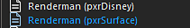
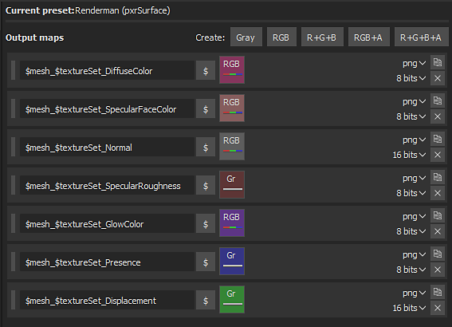

Substance Painter 2020.1 (6.1.0) supports pxrSurface and pxrDisney Output Templates.

It is recommend to use pxrSurface for the Output.

| Substance Painter Export | PxrSurface |
|---|---|
| DiffuseColor | Diffuse / Color |
| SpecularRoughness | Primary Specular / Roughness |
| SpecularFaceColor | Primary Specular / Face Color |
| Normal | Globals / Bump / PxrNormalMap → Orientation (Open GL) |
| Displacement | (red channel ) PxrDispTransform (Result F) → (disp scalar) PxrDisplace (Out Color) → (Displacement Shader) PxrSurfaceSG |
| GlowColor | Glow / Color (Gain = 1.0) |
| Presence | Globals / Presence |
Maps that represent data will need to be interpreted correctly. Please see the Color Management page for more information.